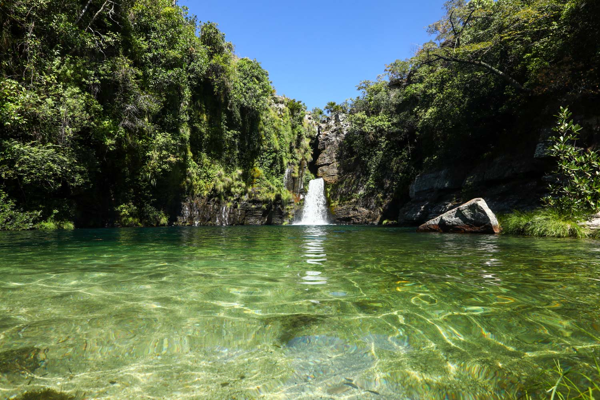
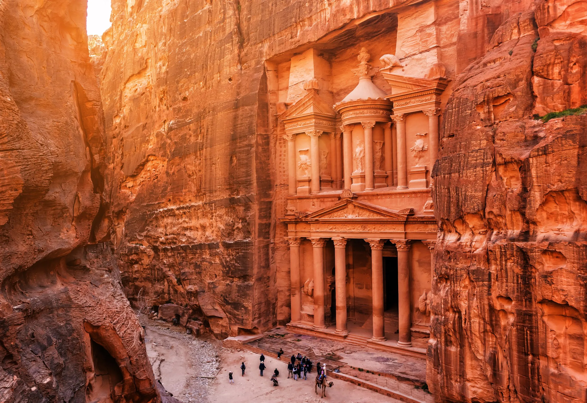
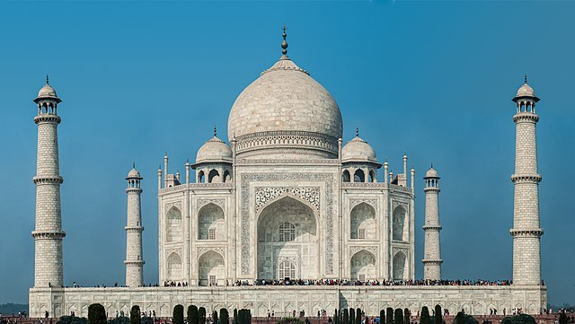

Lençóis Maranhenses
1-Foz do Rio Negro e Lagoa Verde 2-Lagoa Azul 3-Canto dos Lençóis
Bonito - Belezas subaquáticas
1-Gruta do Lago Azul 2-Abismo Anhumas 3-Flutuação no Rio Sucuri
Amazonas - a majestade da floresta amazônica
1-Caminhada nas ilhas de anavilhanas 2-Encontro das águas 3-Safári na amazônia
Alto Paraíso de Goiá- vale da lua
1-Jardim de Maytrea 2-Cachoeira do Abismo 3-Jardim de Maytrea
Chapada dos Veadeiros
1-Cachoeira Almécegas 2-Cachoeira Loquinhas 3-Mirante da janela
Petra
1-Petra- Al Khazneh 2-Wadi Rum 3-Mar Morto
Agra
1-Conhecer o mausoléu 2-Explorar os jardins 3-Visitar o Red Fort
Machu Picchu- Peru
1- Palácio Real y Acllawasi 2- Templo del Condor 3-Templo das Três Janelas
Beijing – China
1- Forbidden City 2- Tiananmen Square 3-Temple of Heaven
Debrecen – Hungria
1-Hortobagy National Park 2- Nagyerdei Stadium 3-Nagyerdei Park